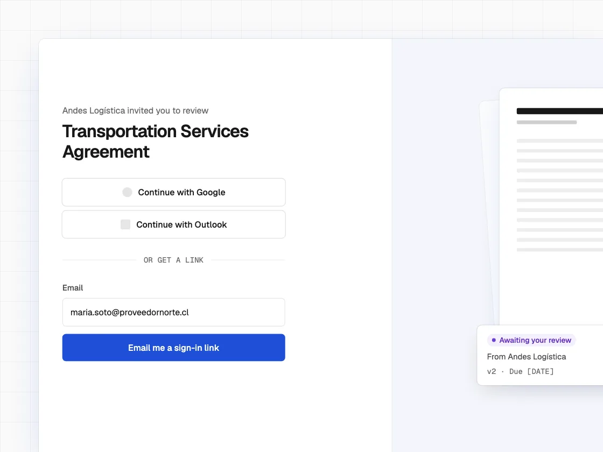
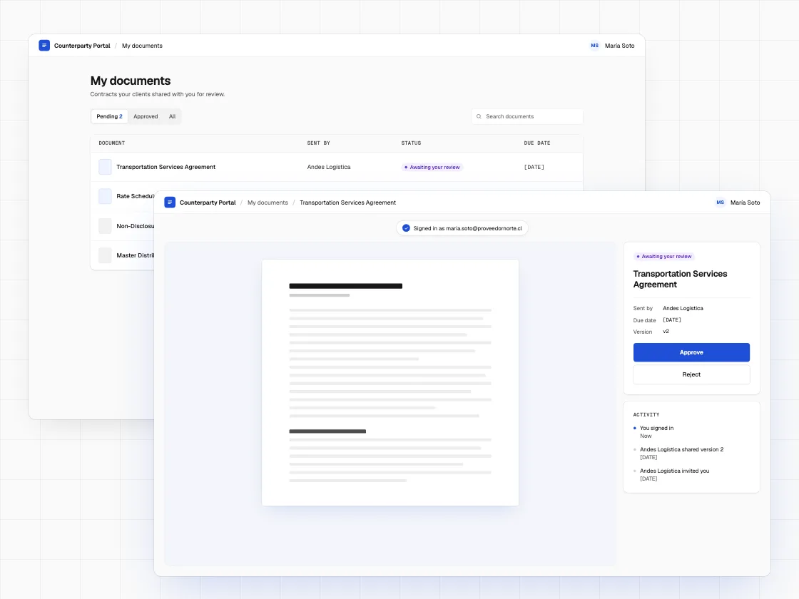

Third-party portal
A portal where our clients' external counterparties could work on contracts inside the platform instead of over email. The squad designed the portal together. After launch, adoption was low. The diagnosis pointed to the password as the main barrier, so I proposed removing it and, within the squad, designed the new sign-in flow on my own.

The problem
Companies managed their contracts inside the platform, except for one part: negotiating and signing with their own counterparty, a client or a supplier. That still happened over email, with no history or traceability. User interviews confirmed the pattern.
Two users
The portal had a different user from the main product. An occasional user didn't need the CLM's tools, which were built for daily use.
| Internal user | External user | |
|---|---|---|
| Frequency | Daily | Occasional |
| Goal | Manage the full contract lifecycle | Review one specific document |
| Needs | The full CLM | Only what that document requires |
DecisionIn the squad we started from the CLM flows and cut them down to what the external user needed. Sign-up and sign-in, however, copied the CLM's. At the time, changing them didn't seem necessary. That is the access flow I later redesigned.

Process
- 1User interviews
- 2Scope definition
- 3Wireframes and prototype
- 4Usability testing
- 5Launch
- Low adoption after launch
- 6Diagnosis with Mixpanel and Hotjar
- 7Sign-in redesign: SSO and magic link
Diagnosis
Few external users signed in to the portal, and fewer came back. The team presented the Mixpanel data in a meeting, and it showed where people dropped off. I reviewed Hotjar to understand why.
Where
Drop-off was concentrated at sign-up and sign-in.
Why
Users requested a password reset or abandoned the process.
For an occasional user, the password was the main barrier to entry.
No password
With that data, I proposed removing the password. Users sign in with a magic link, a tokenized link sent to their email, or with SSO, using their Google or Outlook account.
There are two methods because SSO isn't available for every email provider. The magic link covers those cases.
Walk through the passwordless flow: the email invitation, the three ways to sign in, the alert for a different method and arrival at the document.
This prototype recreates the redesigned flow. It is not the version we tested before launch. The document view appears as context and is not part of my design.
View prototype ↗What I learned
The diagnosis left a distinction I now apply to every project: an occasional user has different needs from a daily user, beyond using the product less often. Friction a regular user overcomes once, an occasional user faces on every visit.
With the same reasoning, I would take the solution one step further today. In the final version, each user always had to sign in with the method they first registered with. Today I would identify them by email regardless of method, so they don't have to remember anything.
The prototype we tested before launch didn't ask users to create an account, so the sign-up friction never showed up in testing. Today I would test with the real sign-up.
Interfaces recreated for illustration. The original design is under NDA.